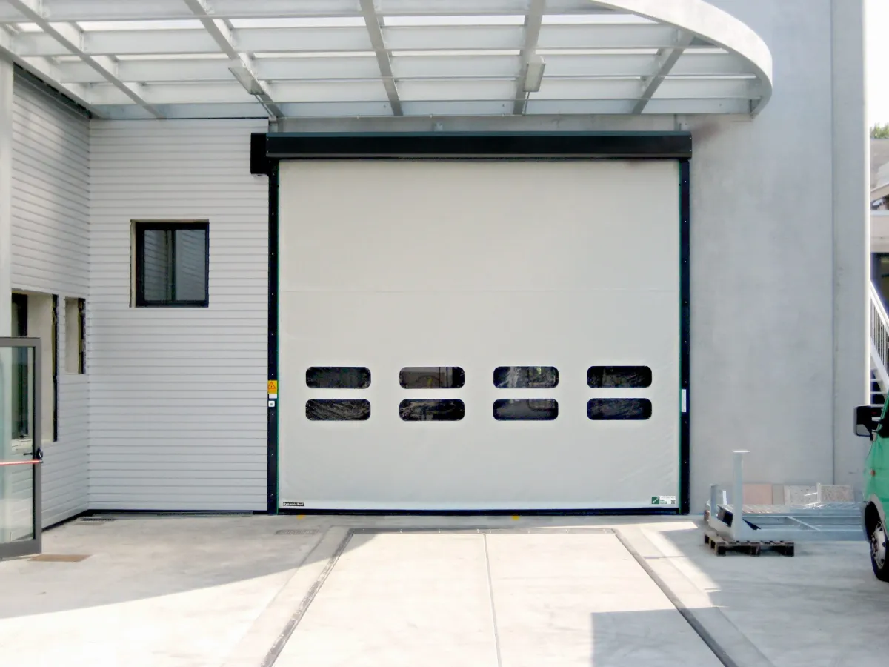
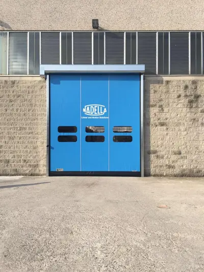
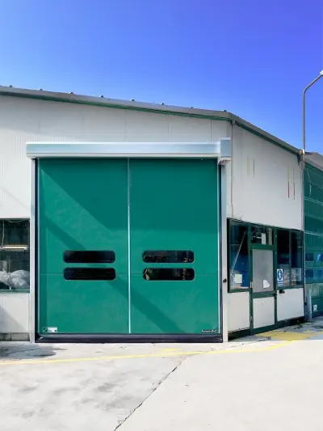
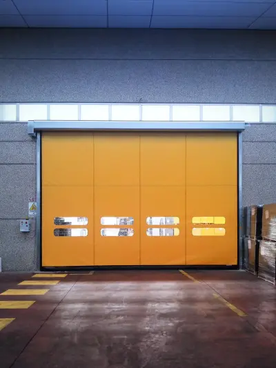
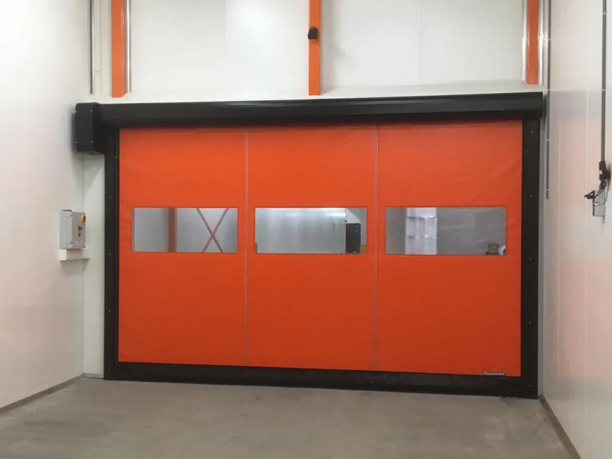

Descubre la innovación con las puertas automáticas DynamicRoll de BMP High Speed Doors. Diseñadas para satisfacer las necesidades de todos los sectores industriales, estas puertas industriales optimizan el flujo de tráfico entre ambientes. DynamicRoll e pueden utilizar tanto como puertas correderas interiores como puertas correderas exteriores. Gracias a su tecnología avanzada, estas puertas correderas industriales ofrecen un funcionamiento silencioso y fiable, lo que las hace ideales para cualquier aplicación industrial.
DynamicRoll está construida sin partes metálicas, utilizando únicamente una lona de PVC de alta calidad. Esto no solo aumenta la seguridad, sino que también reduce los costes de mantenimiento. La capacidad de auto-repararse automáticamente en caso de impactos hace que estas puertas auto-reparables sean una opción duradera y conveniente. Además, el alto aislamiento ofrecido por DynamicRoll ayuda a mantener una temperatura ideal en los espacios, asegurando significativos ahorros de energía.Read More



Las característicass de llaas puertas rapidaas DynamicRoll laas convierten en unna excelente ocion paara multiples aallicaaciiones industriaales. Aqui aalgunos de sus puntos fuertes:
SML RAL
9005
SML RAL
2004
SML RAL
9010
SML RAL
1015
SML RAL
1003
SML RAL
3002
SML RAL
6026
SML RAL
6018
SML RAL
7042
SML RAL
7037
SML RAL
7038
SML RAL
8017
SML RAL
5012
SML RAL
5002
SML RAL
5010
SML RAL
5010

DynamicRoll de BMP High Speed Doors ofrecen numerosas ventajas que las hacen superiores a otras puertas industriales. Gracias a su construcción innovadora, estas puertas mejoran significativamente el flujo de tráfico entre ambientes, facilitando las operaciones diarias. Su versatilidad las hace adecuadas tanto para entornos interiores como exteriores, asegurando un rendimiento óptimo en cada situación.
El bajo mantenimiento requerido por DynamicRoll significa menos interrupciones y costes reducidos a largo plazo. Su alto aislamiento no solo protege los espacios de las variaciones de temperatura, sino que también ayuda a reducir el consumo de energía, convirtiéndolas en una solución ecológica y económica. Si estás buscando puertas industriales que puedan ser utilizadas tanto en interiores como en exteriores, DynamicRoll es la elección perfecta para ti.
Elegir las puertas rápidas auto-reparables DynamicRoll de BMP High Speed Doors significa invertir en un producto de calidad que ofrece seguridad, eficiencia y ahorro energético. No pierdas la oportunidad de mejorar tu entorno de trabajo con esta solución de vanguardia.
DynamicRoll® está disponible en varios modelos y colores. La puerta rápida estándar presenta un resistente tejido de PVC (900 gramos/m²), incluye una ventana de visión opcional y cubre tanto el rollo como el motor. Hay disponible un tejido aislante opcional para zonas con grandes diferencias de temperatura.
Las puertas de accionamiento rápido DynamicRoll pueden adaptarse para satisfacer requisitos operativos específicos. Elija entre una variedad de tamaños, colores y configuraciones que se adapten a la estética de su marca y a sus necesidades operativas. Las opciones de impresión personalizada permiten incluir logotipos de empresa o diseños específicos. Esto mejora el aspecto profesional de sus instalaciones.